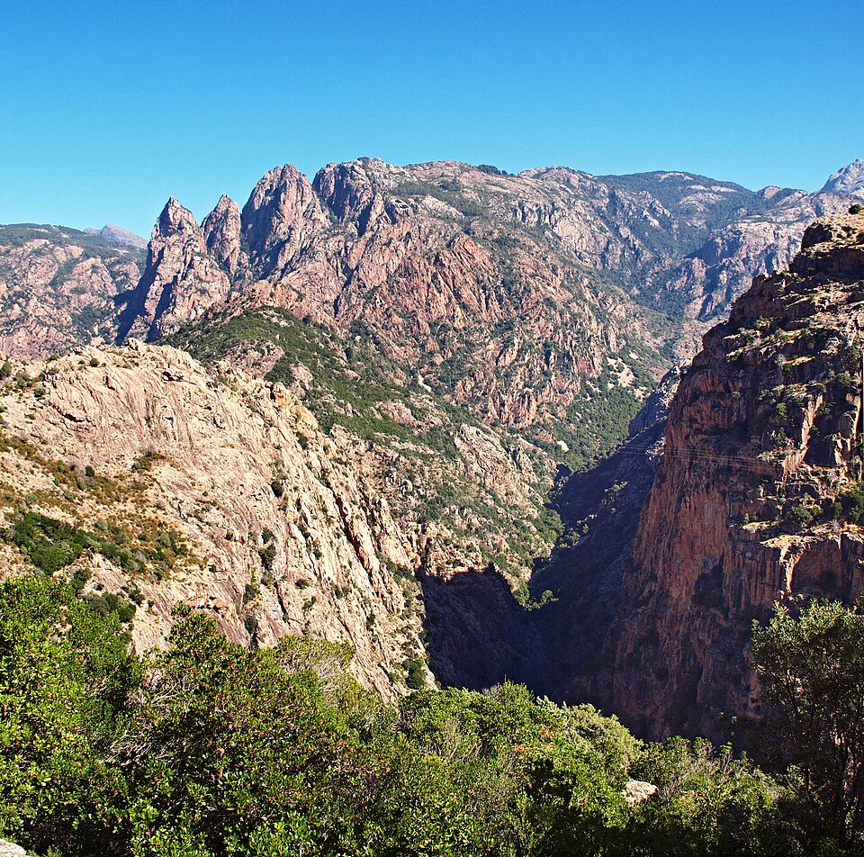

A Porto és Ota falucskája között húzódó Spelunca-szurdok a sziget nyers, megalkuvást nem tűrő belső hegyvidékének egyik legdrámaibb geológiai formációja. A szédítő magasságba emelkedő, szinte függőleges sziklafalakat az erózió és a magas hegyekből alázúduló patakok, a Porto és az Aitone vize vájták ki az ősi, vörös gránit- és porfírkőzetekből. A völgy aljára letekintve vagy a kanyargós hegyi úton haladva az utazót lenyűgözi a táj monumentális vertikalitása, ahol az izzó tónusú kőtömbök és a repedésekben megkapaszkodó zöldellő növényzet állandó vizuális feszültséget teremt a mélyben morajló folyómeder felett.
A szurdok nemcsak természeti, hanem kiemelkedő kultúrtörténeti emlékhely is, amely a Genovai Köztársaság egykori mérnöki zsenialitásáról tanúskodik. A kanyon mélyén rejtőznek azok az elegáns, egyetlen kecses ívvel megépített kőhidak – mint a híres Pont de Zaglia vagy a Pont de Pianella –, amelyeket a 15. és 18. század között emeltek a genovaiak. Ezek az átkelők kulcsfontosságú stratégiai és gazdasági szerepet játszottak, hiszen évszázadokon át ezek kötötték össze a part menti területeket a sziget belsejében fekvő elszigetelt hegyi falvakkal, lehetővé téve a pásztorok szezonális állatterelését (transhumance) és a kereskedelmet a legzordabb terepviszonyok között is.
A Spelunca-szurdok igazi arculatát a völgy mélyén futó egykori öszvérutakon és gyalogösvényeken sétálva lehet igazán megérteni, ahol a mikroklíma és a hangok teljesen elvágják a látogatót a külvilágtól. A sűrű magyaltölgyesek és fenyvesek lombkoronáján átszűrődő napfény misztikus mintákat rajzol a folyóparti óriási, simára csiszolt sziklatömbökre, miközben a kanyon falai felerősítik a rohanó hegyi patak zúgását. A késő délutáni órákban, amikor a lemenő nap sugarai már csak a legmagasabb sziklacsúcsokat érik el, a szurdok mélye hűvös, áhítatos csendbe burkolózik, a fenti izzó vörös gerincek pedig úgy világítanak, mint egy gótikus katedrális lángoló ívei.